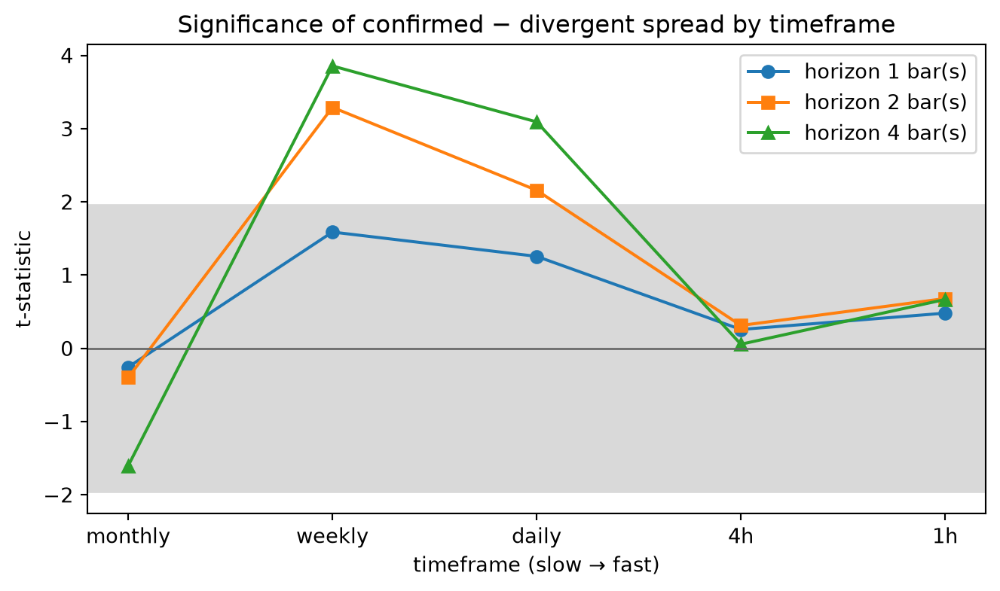

| horizon | mean_spread |
|---|---|
| 1 | 0.0153 |
| 3 | 0.058 |
| 6 | 0.1264 |
Crowded, Confirmed, or Coincidental?
Volume-signed momentum across markets and timeframes — an SCB data-science internship study
I started this expecting to show that crowded momentum trades reverse — that once too many participants are already positioned, the winners roll over and the next move is the unwind. The data said no. High-turnover winners outperformed at every horizon, the exact opposite of the hypothesis. So I did not keep the conclusion and drop the question; I kept the question and interrogated the test. Turnover is unsigned, so I signed the volume. That returned a null, but the null was about the sample, not the signal — a single bull market has almost no divergence to measure. So I moved to a market that does. Each phase here was provoked by the previous one’s failure, not by a fresh guess. What I actually learned is procedural: research is less about being right the first time than about being wrong well — knowing which part of a broken test to fix next.
Keywords: momentum · cross-sectional asset pricing · trading volume · cumulative volume delta · market microstructure · cryptocurrency · timeframe dependence · survivorship bias
Introduction
Momentum — the tendency of recent winners to keep winning over horizons of several months — is among the most durable anomalies in empirical asset pricing (Jegadeesh and Titman, 1993). Its persistence poses an obvious question for a practitioner: when does a momentum trade become crowded — so widely held that the marginal buyer is exhausted and the next move is an unwind rather than a continuation? This paper began as an attempt to answer that question with a simple, testable proxy, and became instead a study of how a research question survives contact with data.
The investigation is organized as three phases, and the phases are the argument. Each did not begin from a fresh idea but from the previous phase’s result, read as evidence about what was wrong with the test itself. Phase 1 operationalizes “crowded” as high share turnover and finds the opposite of the hypothesis. Phase 2 diagnoses the flaw — turnover is unsigned, unable to separate buying from selling — and signs the volume, but lands in a null because its equity sample contains almost no genuine divergence to test against. Phase 3 treats that null not as an answer but as a symptom, and rebuilds the test on a market and a design in which divergence actually occurs, while promoting the measurement timeframe from a fixed assumption to the variable under study.
Two contributions follow. Empirically, we document that volume-confirmed momentum carries predictive information at the weekly and daily scale but not intraday — a timeframe-localized effect that a single-timeframe study could not have detected either way. Methodologically, we offer a transparent account of iterative refinement: what each null taught, why the sample rather than the signal was often the culprit, and how the mundane obstacles of point-in-time data (survivorship, throttled feeds, degenerate prices) shape what a cross-sectional study can honestly claim.
Background
Three ideas recur throughout and are worth stating precisely before the phases begin.
Momentum and short-term reversal
We measure momentum as the trailing twelve-month return skipping the most recent month — the conventional “12 − 1” formation. The skip is not cosmetic: one-month returns exhibit short-term reversal (Jegadeesh, 1990), so including the most recent period would contaminate a continuation signal with a reversal effect that points the other way. Each period we rank the universe by 12 − 1 momentum and study the top of the distribution — the winners among whom “crowding” would, if anywhere, occur.
Crowding, turnover, and its blind spot
A crowded position is one that many participants already hold, such that fresh demand is limited and the trade is vulnerable to an unwind. Turnover — volume divided by shares outstanding — is a natural, if imperfect, proxy: it measures how heavily a name is being traded relative to its float. Its defect is that it is unsigned. Every executed share has both a buyer and a seller; turnover counts the shares, not the aggressor. Two winners with identical turnover can be in opposite situations — one climbing on broad accumulation, the other climbing while early holders distribute into strength. Turnover cannot tell them apart, and this blindness is the hinge on which Phase 1 turns into Phase 2. The link between volume and momentum has direct precedent: Lee and Swaminathan (2000) show that trading volume conditions the momentum life-cycle, with high-volume winners behaving differently from low-volume ones.
Signing the volume: OBV versus CVD
To recover direction one must sign the volume. On-balance volume (Granville, 1963) does so crudely, adding a period’s entire volume when price closes up and subtracting it when price closes down. It is a proxy of convenience — a whole bar reduced to a single ±1 — and it discards magnitude and any intra-bar structure. The quantity it approximates is cumulative volume delta (CVD): the running sum of aggressor-signed volume, buys at the ask minus sells at the bid. On a venue that reports taker-side volume per bar, CVD is directly computable rather than inferred from the close. Phase 2 uses the OBV proxy because trade-level flow is not available for the equity sample; Phase 3 uses true taker-flow CVD. The distinction — inferring flow from where price closed versus measuring which side was the aggressor — is central to the paper’s final result.
Data
Equity sample (Phases 1–2)
The equity study uses S&P 500 constituents at monthly frequency over a roughly five-year window, with adjusted prices and volume, and a single contemporaneous snapshot of shares outstanding used to form turnover. Two data caveats are material and are carried forward as limitations: the constituent list is today’s membership applied backward, inducing survivorship bias, and shares outstanding is a static snapshot rather than a historical series. The window spans a single, largely uninterrupted bull market — a fact that becomes the decisive constraint in Phase 2.
Cryptocurrency sample (Phase 3)
Phase 3 uses spot Binance USDT-quoted pairs from January 2021 to mid-2026, a window deliberately chosen to span a full cycle: the 2021 bull peak, the 2022 bear, and the 2023–24 recovery. Bars are fetched at 1-hour base resolution and aggregated upward to 4-hour, daily, weekly, and monthly, so that all five timeframes derive from one underlying series. Crucially, each bar carries taker-buy base volume, from which net taker flow — real aggressor-signed CVD — is computed directly.
A point-in-time universe
To avoid the survivorship bias that weakened the equity phases, the crypto universe is constructed point-in-time: on each day, all USDT pairs are ranked by trailing 30-day quote volume and the top 75 form that day’s universe. A coin is therefore included only for the days on which it was genuinely liquid — and coins that were liquid for a period and later died remain in the sample for the period they mattered, precisely the observations a today’s-membership list would erase.
Over 2021–2026, 532 distinct coins passed through the daily top-75, a reflection of how aggressively crypto liquidity rotates. Fetching full intraday history for every one of them against a throttled public data mirror proved impractical, so the universe is capped to the 60 coins with the most days-in-universe: a persistence filter that retains sustained-liquidity names — including those that later collapsed — and discards one-week alt-season entrants. This is a disclosed re-introduction of a small amount of survivorship bias, far milder than a static roster, and is treated as a limitation rather than hidden.
Methodology
The three phases share one skeleton and change one variable at a time — a deliberate design so that any difference in result is attributable to the change, not to a redesign.
Ranking and the group split
Each period, the universe is ranked by 12 − 1 momentum and the top of the distribution is retained — the top decile in the deep equity cross-section, the top quintile in the smaller crypto cross-section. That winner set is then split at its own median of the phase’s sorting variable into two balanced groups. Holding the split rule fixed across phases means the only thing that changes between them is what variable does the sorting.
The sorting variable, phase by phase
- Phase 1 — turnover (unsigned). Winners are split into high- versus low-turnover; the crowding hypothesis predicts high-turnover underperforms.
- Phase 2 — OBV net flow (signed by close). The sorting variable becomes the change in on-balance volume over the formation window, normalized by total volume, dividing winners into flow-confirmed and flow-divergent.
- Phase 3 — CVD net taker flow (signed by aggressor). The same confirmed/divergent split, but the signal is real net taker flow,
(taker buy − taker sell) / total volume, bounded in [−1, 1].
Forward returns and the spread statistic
For each period we compute forward returns of the two groups at several horizons, take the mean return of each group, and record the spread = confirmed − divergent (or high − low turnover in Phase 1). The time series of period-by-period spreads is summarized by its mean and a t-statistic, t = mean / (sd / √n). A positive, significant spread in Phases 2–3 supports volume confirmation; a negative one would support the crowding-reversal reading.
The timeframe sweep
Phase 3’s central move is to stop assuming a horizon and instead run the entire test at each rung of a ladder — monthly → weekly → daily → 4h → 1h — reporting for every timeframe not only the spread and its t-statistic but the divergence rate, the fraction of winner-bars with genuinely negative flow. The divergence rate is a diagnostic on the test’s own validity: a timeframe in which divergence never occurs cannot inform the hypothesis, whatever its t-statistic.
A necessary robustness step
Cryptocurrency returns computed from price ratios are vulnerable to near-zero denominators. A single observation — the LUNA token’s May 2022 collapse to roughly $0.0001 — produced a forward return of +5,199,900% that, unaddressed, corrupted an entire timeframe’s spread. Forward returns are therefore winsorized to their 1st/99th percentile within each horizon before aggregation, so that no single degenerate print can dominate a mean. This is standard practice for return-based cross-sectional work and is disclosed rather than silent.
Results
Phase 1 — turnover does not predict reversal
Splitting top-decile momentum stocks by turnover produces the opposite of the crowding prediction: high-turnover winners outperform low-turnover winners at every horizon, and the gap widens with time (Table 1). No formal significance test was computed at this stage — a limitation the design itself named — so the result is a strong directional rejection rather than a statistical one. Whatever “too many people are in this trade” does to future returns, it is not the reliable drag the hypothesis assumed.
Table 1. Phase 1 — high − low turnover spread, S&P 500 momentum winners. High-turnover winners lead at every horizon; the spread compounds rather than reverses. Significance untested at this stage (see Limitations).
NoteWhy Phase 2 happened
Phase 1 rejected the crowding story, but I did not trust the rejection as an answer — turnover is unsigned. Every executed share has a buyer and a seller; turnover counts the shares, not who was the aggressor. Two winners with identical turnover can be in opposite situations, one climbing on real accumulation, the other climbing while early holders distribute into strength, and turnover cannot tell them apart. That blind spot is the whole reason I signed the volume next: if the crowding idea has any content, it lives in the direction of the flow, not its size. OBV was the crude fix — a whole month collapsed to a ±1 per day — but it was the fix the equity data would support.
Phase 2 — a null, and why
Signing the volume with OBV and re-running the identical split yields no reliable effect: every t-statistic sits below one in magnitude (Table 2). But the informative number is the diagnostic, not the t: only 2.7% of winner-months exhibited strictly negative flow. In a single sustained bull market, genuine price/flow divergence barely occurs — so the median split was really contrasting “strongly confirmed” against “weakly confirmed,” not confirmed against divergent. The null is therefore uninterpretable in the strong sense: it does not show that confirmation is irrelevant, only that this sample could not test it. That realization, not the t-statistics, is what motivates Phase 3.
| horizon | mean_spread | n_months | t_stat |
|---|---|---|---|
| 1 | -0.0007 | 59 | -0.135 |
| 3 | -0.0048 | 57 | -0.475 |
| 6 | -0.0154 | 54 | -0.9811 |
Table 2. Phase 2 — confirmed − divergent spread (OBV), S&P 500 momentum winners. With divergence occurring in only 2.7% of winner-months, the test had almost nothing to measure. The problem is the sample, not the signal.
NoteWhy Phase 3 happened
The 2.7% divergence rate is the number that mattered, not the t-statistics. If genuine price/flow disagreement almost never occurs, the median split is contrasting “strongly confirmed” against “weakly confirmed” — it is not testing the hypothesis at all. So the null was a symptom of the sample, and three fixes followed from that reading. First, move to a multi-regime market where divergence actually happens: crypto, spanning the 2021 top, the 2022 bear, and the recovery. Furthermore, replace the OBV proxy with real CVD — taker buy minus taker sell per bar — so the signal measures who was the aggressor rather than inferring it from where the bar closed. Moreover, stop assuming a horizon: promote timeframe from a fixed assumption to the variable under study, and sweep the identical test from monthly down to 1-hour.
Phase 3 — a timeframe-localized effect
On the multi-regime crypto panel with real CVD, divergence is no longer scarce: divergence rates run from 44% to 78% across the ladder, an order of magnitude above the equity sample, confirming the test finally has something to measure. The result (Table 3, Figure 1) is a clear timeframe gradient. Confirmed momentum significantly outperforms divergent momentum at the weekly and daily scale — the spread strengthens with horizon and the t-statistic reaches 3.86 at weekly horizon 4 — while at 4-hour and 1-hour the spread collapses to essentially zero, with t-statistics near the origin. At the monthly scale the sign flips weakly negative but never approaches significance.
| timeframe | horizon | mean_spread | std_spread | n_bars | t_stat | divergence_rate |
|---|---|---|---|---|---|---|
| monthly | 1 | -0.0029 | 0.0824 | 53 | -0.2549 | 0.776 |
| monthly | 2 | -0.0065 | 0.1173 | 52 | -0.3974 | 0.776 |
| monthly | 4 | -0.0363 | 0.1603 | 50 | -1.6025 | 0.776 |
| weekly | 1 | 0.006 | 0.0624 | 270 | 1.5891 | 0.7496 |
| weekly | 2 | 0.0186 | 0.0929 | 269 | 3.2919 | 0.7496 |
| weekly | 4 | 0.0337 | 0.1429 | 267 | 3.8574 | 0.7496 |
| daily | 1 | 0.0009 | 0.0304 | 1966 | 1.2569 | 0.6279 |
| daily | 2 | 0.0021 | 0.0425 | 1965 | 2.1598 | 0.6279 |
| daily | 4 | 0.0042 | 0.0601 | 1963 | 3.0936 | 0.6279 |
| 4h | 1 | 0 | 0.0122 | 11856 | 0.2584 | 0.5167 |
| 4h | 2 | 0 | 0.0173 | 11855 | 0.3133 | 0.5167 |
| 4h | 4 | 0 | 0.0246 | 11853 | 0.0568 | 0.5167 |
| 1h | 1 | 0 | 0.0061 | 47446 | 0.4813 | 0.4445 |
| 1h | 2 | 0 | 0.0086 | 47445 | 0.6809 | 0.4445 |
| 1h | 4 | 0 | 0.012 | 47443 | 0.6682 | 0.4445 |
Table 3. Phase 3 — confirmed − divergent spread by timeframe and horizon (crypto, CVD); 2021–2026, 60 most-persistent Binance USDT pairs. Divergence rate is the fraction of winner-bars with negative net flow. Horizon-2 and horizon-4 statistics use overlapping windows and are upward-biased in significance; see Discussion.


Central result. Volume-confirmed momentum is a slow-timeframe phenomenon. At weekly and daily scales, winners backed by genuine buying flow outperform winners rising on distribution; at 4-hour and 1-hour the distinction carries no information at all. The effect is not merely undetected intraday — it is absent.
Discussion
Two hypotheses, not one
It is tempting to read the three phases as three tests of a single “crowding” idea, but that conflates two distinct claims. Phase 1 tests whether raw participation (turnover) marks a reversal-prone trade; that claim is rejected on its own terms and is not resurrected later. Phases 2–3 test a different proposition — whether momentum requires signed buying flow behind it to persist — which is related in spirit (both ask whether a rally is “real”) but is neither logically equivalent to nor evidence for the turnover claim. Keeping them separate matters: Phase 3’s positive weekly/daily result is not a vindication of crowding-reversal, and Phase 1’s rejection is not overturned by it. The honest summary is that participation does not predict reversal, while flow-confirmation predicts continuation at specific horizons.
The timeframe gradient
The gradient answers the question Phase 3 was built to ask: at which timeframe, if any, does the signal live? The pattern — nothing at monthly, a peak at weekly/daily, nothing intraday — is consistent with the intuition that flow-versus-price disagreement resolves into returns over days-to-weeks, the horizon at which position rotation actually plays out, and is simply not a next-bar phenomenon at 1-hour or 4-hour resolution. A single-timeframe study would have reported either a positive or a null result and been equally misleading about the object as a whole; making timeframe the variable is what turns two contradictory-looking possibilities into one coherent shape.
Why we call it suggestive, not proven
Two disciplines temper the reading. First, the largest t-statistics occur at horizons 2 and 4, which use overlapping forward windows: consecutive observations are not independent, the effective sample is smaller than the nominal bar count, and the t-statistic is upward-biased as a result. The only clean, non-overlapping estimates are at horizon 1, and there the strongest value — weekly, t = 1.59 — falls short of the conventional 1.96 threshold. Second, sweeping fifteen timeframe-horizon cells invites multiple-comparison concerns; a coherent gradient across neighboring cells is more persuasive than any single starred entry, and it is the gradient, not the individual stars, that we rest on. The result is best described as a real, internally consistent pattern that does not yet meet a strict significance bar on its cleanest test.
NoteWhat the three phases actually taught me
The result I can defend is narrow — flow-confirmed momentum outperforms at weekly and daily scale, and I read even that as suggestive, not proven. The larger thing I take away is about process. None of the three phases came from a new idea; each came from reading the previous phase’s failure as evidence about the test rather than the world. Phase 1’s rejection told me turnover was the wrong instrument. Phase 2’s null told me the sample, not the signal, was empty. The discipline was resisting the easy move — keeping a clean-looking conclusion — and instead asking which specific assumption broke. That is what I mean by being wrong well: a null is only wasted if you stop at the t-statistic instead of asking why it came out that way.
What it actually took
Before any of the research questions could be answered, three concrete problems had to be solved — one network, one data, one definition. Each taught a lesson that outlasts this project.
WarningWar story: the firewall
The clean plan was to pull klines from api.binance.com. It was blocked by SCB’s corporate security gateway — the same block I had hit in an earlier project, so I recognized the failure fast. The fix was data-api.binance.vision, Binance’s own public data mirror, which I verified returns a schema-identical payload before trusting a single number from it. Lesson: infrastructure fails before your hypothesis gets a chance to; know your data source’s alternate endpoints, and confirm a substitute feed is byte-for-byte comparable before building on it, rather than assuming a mirror matches.
WarningWar story: the LUNA blowup
The weekly horizon-4 spread came back as roughly −4865% — a nonsense mean. Reading the underlying observations rather than the code found it in one bar: LUNA’s May 2022 collapse to about $0.0001 produced a single forward return of +5,199,900%, and one degenerate print was dragging an entire timeframe’s mean. This was a data problem, not a signal problem. The fix was to winsorize forward returns to their 1st/99th percentile within each horizon before aggregating. Lesson: any mean return computed from price ratios in a market where assets can go to near-zero must be checked for near-zero denominators first; the bug was invisible in the code and only showed up in the numbers.
WarningWar story: the momentum-definition bug
The momentum signal was implemented as a plain N-bar return ratio, close / close.shift(12), instead of true 12 − 1 momentum, close.shift(1) / close.shift(12) − 1. It ran without error and produced plausible rankings — the kind of bug that hides. It surfaced in review, traced back to a miscalculated expected value in my own test, so the test was confirming the wrong behavior. Fixing it restored the one-month skip and kept Phase 3 comparable to Phase 1. Lesson: a test only protects you if its expected value is derived independently of the code; a wrong test is worse than none, because it certifies the error.
Limitations
- Survivorship, residual. The point-in-time universe removes most survivorship bias, but the persistence cap (60 longest-lived coins) and the exclusion of fully delisted symbols unreachable through the public data endpoint reintroduce a small, disclosed amount. In the equity phases, the S&P 500 roster is today’s membership applied backward — an unmitigated survivorship bias carried as a caveat.
- Overlapping-window autocorrelation. Horizon-2 and horizon-4 statistics are autocorrelated and their significance is inflated; only horizon-1 is a clean test. No block-bootstrap or Newey–West correction was applied, so the reported t-statistics should be read as indicative and the gradient trusted over individual cells.
- Snapshot shares outstanding. Equity turnover is formed from a single contemporaneous snapshot of shares outstanding rather than a historical series, so turnover in earlier months is measured against a float that may not have existed then.
- Winsorization disclosure. Forward returns are winsorized to their 1st/99th percentile within each horizon to neutralize degenerate near-zero-price prints (see Methodology); this is a deliberate, disclosed intervention on the raw return distribution rather than a silent filter.
- Two variables changed at once. Phase 3 alters both asset class (equity → crypto) and signal (OBV → CVD) relative to Phase 2, so its departure from the Phase 2 null cannot be attributed to either change alone.
- Regime specificity and proxy limits. Findings may reflect crypto market structure — retail-heavy, high-leverage, 24/7 — and need not generalize to equities; and taker-signed volume, while genuine aggressor flow, is not full order-book depth, so resting and hidden liquidity remain invisible.
References
- Granville, J. E. (1963). Granville’s New Key to Stock Market Profits. Prentice-Hall.
- Jegadeesh, N. (1990). Evidence of Predictable Behavior of Security Returns. The Journal of Finance, 45(3), 881–898.
- Jegadeesh, N., & Titman, S. (1993). Returns to Buying Winners and Selling Losers: Implications for Stock Market Efficiency. The Journal of Finance, 48(1), 65–91.
- Lee, C. M. C., & Swaminathan, B. (2000). Price Momentum and Trading Volume. The Journal of Finance, 55(5), 2017–2069.